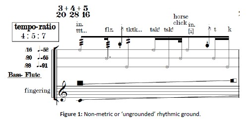
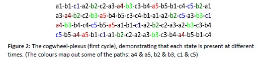
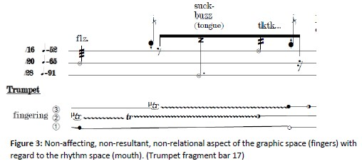

|
Non-vanishing Vacuum State In this piece, as in all others, I
make a multi-stratum theoretical framework, a synthesis of conceptualizations. I
then scan, sample and slice that concoction-theory arbitrarily as well as
continuously while I act and parallel to my actions, intoxicated by it. With
force I thrust these actions in between science and philosophy. "The poet makes
himself a visionary by a long, immense and rational deregulation of all the
senses"”.[1] Two vacuums, two rhythmic grounds I
start with the vacuum. In classical physics the vacuum is the ground state, it
has zero energy and contains nothing (no particles). However, the quantum
vacuum, the modern vacuum,
explored through the Quantum Field Theories, is an active state and far
from
empty (although without particles as well) and 'expresses’ uncommonly
complex
ground “for even in the ground state there is some motion, there are
'jigglings' in the x coordinate – called zero point vibrations, or zero
point
oscillations”.[2] It
has an instability structure. I would like to compare these two conceptions of
the vacuum with the philosophical concepts of identity and difference as
similarly two different ground states. Identity is then analogous to the stable
zero ground (classical vacuum) and difference (the one which interests me)
analogous to the unstable non-zero ground (quantum vacuum). Furthermore, the
quantum vacuum is considered as a field “executing random fluctuations”[3],
a system capable of “virtual states”, meaning it is “’virtually’ in any of the
states”, and “having some kind of 'potentiality’”.[4]
This capacity, or property, amounts to pure movement/duration, and effectively
dismantles a certain temporality problem. This structure (behaviour) is simulated, or employed, in the piece Non-vanishing vacuum state by the twofold rhythmic structure. On the one hand the structured multiple-circulation of material – the so-called cogwheel-plexus – and on the other the structure of the 'rhythmic ground’. As I have discussed, there are two types of identities and vacuums, and similarly I propose that there are two types of ‘rhythmic grounds’. The first one, the traditional and metric, rests on a stable and fixed ground; the second, non-metric, rests on an unstable, unsettled, non-euclidean, nomadic and undecidable ground – the 'ungrounding’ (Figure 1). 
Now, because of practicality, I have only managed to construct a semi-ungrounded rhythmic ground, meaning that my ground has in fact three fixed grounds or three tempi simultaneously (see Fig. 1, upper staff containing three lines, each with its own tempo with the ratio of 4:5:7, resulting in a ground based on 16th, 20th, and 28thnotes). It renders therefore, on paper, merely an approximation of 'ungrounding’. But, as a whole, and in effect, it is unstable. On this ground I place the rhythmic material which then warps accordingly. I use the term non-metric in the sense that measures/bars become only containers of durational values not stipulating any order of durational values, thus there is no metre or common beat attached to the time-signature (as in 1,2,3, etc.), the values can appear in any order and there is no underlying 1st or 2nd beat fixities etc. (the 'non' can be best understood as in non-euclidean). This also eliminates tuplets and any even distribution patterns.[5] Furthermore, I need to emulate the 'virtual states’ function, i.e. being partly in each of the states. This is done by the cogwheel-plexus, Figure 2: 
The same basic material (a1-5, b1-5,
c1-5, each consisting of 3 bars, thus a1-5 = 15 bars) is differently split into
four different stripes or rows (one for each instrument) as seen in Figure 2,
which effectuate a constant vertical-horizontal repetition of the material, simulating
the Bergsonian structure of “…none of them do begin or end; they all dove-tail
into one another”[6], meaning
the same materials are continuously shifting between instruments, thereby
rendering a certain interpenetration and a continuous unique alteration
(difference) to the present state. Figure 2 shows the first section/cycle of
the piece and how the materials are constantly shifted between parts,
continuously fluctuating. Later in the piece, during section 3, this first section
is twisted, compressed, and stretched per part and as a whole. This constitutes
the ungrounded pure-movement stratum or the non-identity as instability
approach. Instability, physicality, separation, non-relation and pure
effort/struggle Another important stratum is the instability-physicality function. I endeavour to stretch the instability of the rhythmic structure, or rather instability itself, through and through, into the physical, the tactile, and even beyond, into the biological or physiological, the proprioceptive area. This is done by assigning to the rhythms specific physical instabilities, which are developed through schizoanalysis or disjunctive physicality. I separate and then separate again, and again… I make a function out of separation and instability: f(x)=intensify/destabilize/’ungroundify’. I then loop it, or better, fractalize it. In this respect, I dismantle (ideally without end): the mouth, the tongue, the fingers, right & left, in & out, tendons and joints (“always decode, chatters schizoanalysis; believe nothing, and extinguish all nostalgia for belonging”).[7] “Occidental ontology is threatened by a violent movement of scission, and one that does not come from the subject, but from the body”.[8] All strata must become saturated in this manner. This is the theory; the practice struggles to keep up. However, the score/notation demonstrates this separation-function by separating staves, individualizing fingers, making a multiplicity out of the mouth and its airstreams (in/out), and by a twofold time-space, i.e. the non-metric 'space’ (mouth) and the graphical 'space’ (fingers), which are forced together by separation and struggle, or pure effort. This needs further explanation. First it should be noted that by employing a non-flat, non-euclidean or the triple split rhythmic ground (the threefold tempo staff) it consequently becomes necessary to separate the rhythmic information from any other information since the rhythm cannot be superimposed onto another staff (as is usually the case with the 5-lined pitch staff, etc.). Thus, this forces me to use another staff/space for the finger material, namely the graphic 'space’. But the graphic 'space’ is attached to the non-metric ‘space’ through scission not unity, their relation is complex, or non-relational, not straight or clear but confused. They form a “being-separated”, a separation that does not form two, a “unilateral duality ... a being-separated without which there would have been a sectarian operation … but radical or immanent, a Separated-by-immanence”.[9] Furthermore, the graphics are occasionally non-affecting, i.e. they manifest actions in a non-affecting, non-resultant, non-relational manner (indirect), a certain in-itself-ness, the silent intensity. This means that their actions are not intended to affect the sonic-result, or be sonically based, but instead intensifying-based. In Figure 3 this is demonstrated; see for instance the trills along with the gradual opening (lowest line) which continues through the silenced mouth (the '8th’ silence) and the half-opening (3rd finger) at the end of the bar during the '20th’ silence: 
The
graphics also occasionally manifest 'outsiders’ movements, movements according
to the first way of knowing (Bergson, 1992), movements which do begin and end
(or at least try) or movements between two points (e.g. in Fig. 3 the 1st
finger from closed to open) – molar properties, modes of being rather than
becomings (Deleuze). However, these molar-movements are captured and enveloped
in their non-relation with the non-metric 'space’, which warps these movements
and/or injects an effort of destabilization or schizoanalysis into them. In
this regard, in some portion of the channel of their indirect relation, an
effort forms to fix or stabilize the ungrounded (non-metric) and at the same
time destabilize the grounded (graphics) (Bergson’s 'second way’ (intuition) meets
the 'first way’ (analytic) and vice versa). This performs the non-identity of
schism or “the Identity-without-unity”[10],
and demonstrates the eversion of elements, the multi-everted object. Moreover, this ‘system’
demonstrates a certain pure-form isolations: difference without 'between’,
effort without 'towards’ and struggle without 'for’ – bound but unbound,
immobilized mobility or 'catatonic’ instability. I think of Giacometti in his
attempt to isolate movement as a stable instability, where the surface squirms
and the movement is catatonic, distanced, locked yet unlocked in the figure: “From mere space Giacometti
therefore had to fashion a man, to inscribe movement in total immobility, unity
in infinite multiplicity, the absolute in pure relativity, the future in the
eternal present, the loquacity of signs in the tenacious silence of things”.[11]
There is no better medium for movement than sculpture. All this is a matter of
intensification: “intensities presuppose and express only differential
relations”[12],
and “intensities are at once clear and confused. They are clear insofar as they
are enveloping and confused insofar as they are enveloped”.[13]
Similarly, and conclusively, I can simply say that this relation between the
non-metric-space and the graphic-space is intensive. Lastly, I compare this structure/phenomenon
with a dream I had where an image was fixed upon my eyes; what I was seeing was
non-changing, and even though I opened and closed my eyes, moved my head, and
moved about, there was nothing that would change the image or the perspective I
had on it. It is this instance, a non-relational, non-resultant instance, of
moving one’s head/position without renewing the visual information, which
constitutes a dynamic, intense stable-instability. [1] Rimbaud (1986), Collected Poems, 10 [2] I.J.R Aitchison, 'Nothing's plenty
- The vacuum in modern quantum field theory’ Contemporary Physics vol.50. No.1 (2009), 261-319. [3] Ibid. [4] Ibid. [5] It is “impossible” (although
interesting) to put a triplet (even distribution in 3) over a whole such bar,
as we would end up with truly irrational durational values, i.e. transcendental
numbers such as π. [6] Bergon (1992), Introduction to Metaphysics [7] Land (2011), 264 [8] Ibid. (my emphasis) [9] Laruelle (2010) [10] Laruelle (2010) [11] Sartre (1993) [12] Deleuze (2004), D&R [13] Brassier (2010), 172 |
|